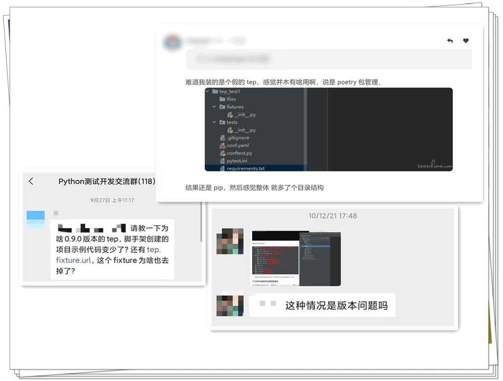
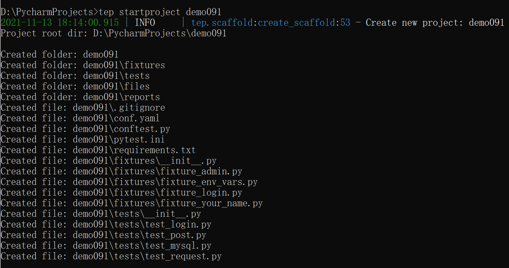
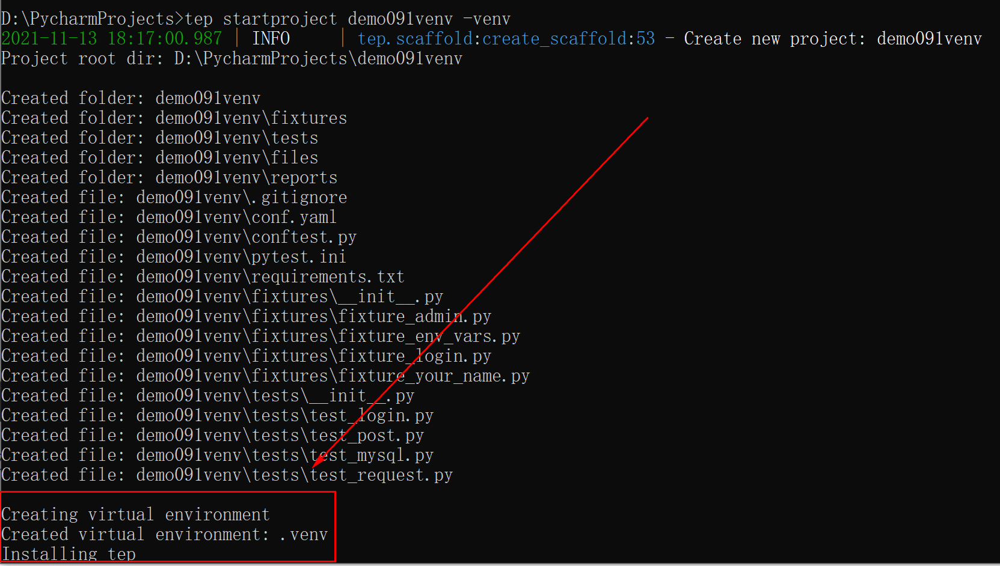
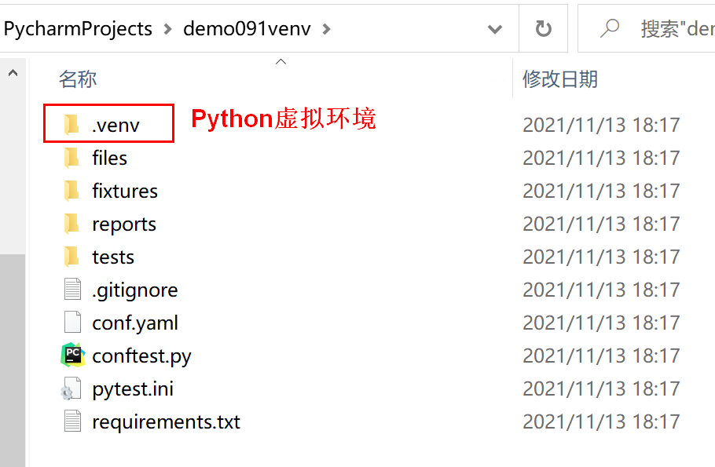

本书作者：测试开发刚哥，文章版权归个人所有，未经授权请勿转载。
最近几个月时间有些小伙伴问到为什么tep项目初始化文件没有了？

造成这种困扰，实在是抱歉，确实在删掉项目初始化文件时欠考虑了。我当时的想法是让tep像flask那样，只保留最核心的能力，其他能力自由扩展。但是好像tep并没有flask那么强（这是一句正确的废话），大家在用tep时也是复用了项目初始化文件，在此基础上实践自己的自动化项目。
恢复项目初始化文件
于是我决定在最新的0.9.1版本中恢复这些初始化文件：

**原汁原味还原了《tep用户手册帮你从unittest过渡到pytest》这篇文章提到的内容。**相比于用户手册，最新的0.9.1版本还做了两点增强：
-
把
fixture_env_vars.py和fixture_login.py从fixture_admin.py中拆了出来，解耦后，文件层次更清晰。 -
添加了
test_request.py文件，request的常见用法可以从这里找到：from tep.client import request request("get", url="", headers={}, json={}) request("post", url="", headers={}, params={}) request("put", url="", headers={}, json={}) request("delete", url="", headers={}) # upload excel file_name = "" file_path = "" request("post", url="", headers={}, files={ "file": ( file_name, open(file_path, "rb"), "application/vnd.openxmlformats-officedocument.spreadsheetml.sheet" ) }, verify=False )
初始化时创建虚拟环境
还有就是提供了-venv参数，在项目初始化时，可以同时创建一个虚拟环境，像这样：
tep startproject demo091venv -venv

并自动安装了最新版本的tep。

最后感谢小伙伴们对tep工具的支持，我会继续完善它的，一起加油！